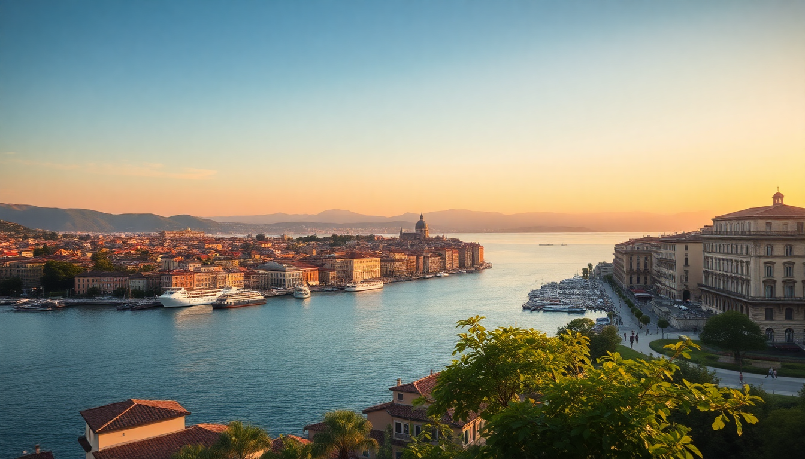

Best Day Trips from Venice: Murano, Burano & Verona

I’ve spent enough weekends in Venice to know that after two days of canal crowds and €8 coffee, you need an escape. The lagoon islands and Verona offer exactly that—without the tourist-trap markup if you know where to go. Here’s what I learned from actual ferry schedules, train delays, and one very good plate of pasta in Verona.
Is Murano worth the hype or just a glass-selling scheme?
Murano is worth it—but only if you skip the “free” factory tours that end in a showroom. The real draw is the island itself: quiet canals, no cruise-ship crowds, and the Museo del Vetro (Glass Museum) inside the Palazzo Giustinian. I spent an hour there and saw glasswork dating back to the 15th century.
- Fondamenta dei Vetrai — the main street lined with workshops. Watch a master blow glass at Fornace Mian (they don’t push sales).
- Basilica dei Santi Maria e Donato — 12th-century mosaic floor that gets zero Instagram attention. Free entry.
- Trattoria ai Vetrai — solid spaghetti alle vongole for €14, no English menu. That’s how you know it’s real.
- Ferry tip — take vaporetto line 4.1 or 4.2 from Fondamente Nove. Runs every 10 minutes, 30-minute ride, €9.50 one-way. Don’t buy a day pass unless you’re doing three islands.
Skip the “glass-blowing demonstration” that ends with a “special price” on a vase. That’s a commission funnel. Watch a real artisan at a small shop instead.
How do I visit Burano without wasting half the day?
Burano is the colorful postcard island, but it’s also a real fishing village with laundry lines and old men fixing nets. The trick is timing: arrive before 10 a.m. or after 3 p.m. The midday crowds from group tours turn the main canal into a selfie stampede.
- Vaporetto line 12 from Fondamente Nove to Burano (45 minutes, same €9.50 ticket). Get off at the Burano stop, not Mazzorbo.
- Via Galuppi — the main square with the leaning campanile. Grab a coffee at Caffè Galuppi just to sit and watch.
- Lace Museum (Museo del Merletto) — small but fascinating. Entry is €5 and covers the history of Burano lace, which was nearly extinct until locals revived it.
- Trattoria al Gatto Nero — book a week ahead. Their risotto di gò (local fish risotto) is the best I’ve had in the lagoon. No, you can’t walk in.
- Photography — the best color blocks are on Fondamenta della Pescheria (north side) and Fondamenta dei Borgognoni (east side). No filter needed.
One honest warning: Burano is small. Two hours is enough unless you’re sketching or photographing. I’d pair it with a quick stop at Torcello (one stop before Burano on line 12) for the Byzantine cathedral mosaics. That church is older than St. Mark’s and almost empty.
Can I do Venice and Verona in the same day? Yes, if you plan the train.
Verona is 75 minutes from Venice Santa Lucia station on the Frecciarossa or Italo high-speed trains. I’ve done it as a day trip three times—it works if you leave by 8 a.m. and catch the 7 p.m. return. The station is Verona Porta Nuova, and the old town is a 15-minute walk straight down Corso Porta Nuova.
- Arena di Verona — the Roman amphitheater that’s still used for opera. Skip the €10 guided tour; the self-guided audio tour is fine. Go early (opens 8:30 a.m.) to avoid lines.
- Piazza delle Erbe — the old market square with a frescoed tower, a lion fountain, and the Madonna Verona statue. Grab a spritz at Caffè della Piazza but expect €8 for a small Aperol.
- Juliet’s House (Casa di Giulietta) — completely overrated. The courtyard is packed, the balcony is a 1950s addition, and the “love note” wall is sticky. Walk past, take a photo from the street, and move on.
- Ponte Pietra — the Roman stone bridge with views up to the castle. Best sunset spot in town.
- Osteria Sottoriva — hidden under the arches near the Adige river. I had a plate of bigoli con sarde (sardine pasta) for €12, and the house wine was €3. No reservations, just show up before 1 p.m.
- Hotel Accademia — if you decide to stay overnight, this is the best mid-range option right on Via Scala. Rooms start around €120 in shoulder season.
Train tip: book on Trenitalia or Italo at least three days ahead for the best price. A same-day round trip can cost €60+; advance tickets drop to €25 total. Use the Omio app for quick booking, but always check the platform number at the station—they change last minute.
What’s the best way to get to Murano, Burano, and Torcello in one day?
It’s doable but tight. I’d start at 8 a.m. from Fondamente Nove, take line 12 to Torcello first (45 minutes), spend 45 minutes at the Basilica di Santa Maria Assunta, then hop back on line 12 to Burano (5 minutes). Spend 1.5 hours there, then take line 12 back to Murano (30 minutes). Finish with an hour in Murano before heading back.
- ACTV 24-hour tourist pass — €25, covers all vaporettos including the airport lines. Worth it if you’re doing three islands.
- Lunch — bring a panino from Pasticceria Tonolo in Venice (Dorsoduro, best croissant in town). Island restaurants are pricey and average.
- Wear comfortable shoes — you’ll walk 8–10 km across the three islands. No joke.
The catch: you’ll be rushed. If you want to actually enjoy Burano’s lace museum or Murano’s glass museum, pick two islands instead of three. My favorite combo is Burano + Torcello for a half-day.
Are there any hidden gems near Venice that tourists miss?
Yes, but most aren’t in the lagoon. Padua (Padova) is 25 minutes by train from Venice and has the Scrovegni Chapel with Giotto’s frescoes—one of the most important art cycles in Europe. Book tickets weeks ahead; they limit entry to 25 people per 15-minute slot.
- Prato della Valle — Europe’s largest square, with a canal ring and 78 statues. Empty on weekdays.
- Caffè Pedrocchi — historic café from 1831. Order a caffè pedrocchi (coffee with mint and cream) for €4. The interior is a museum.
- Basilica di Sant’Antonio — free entry, massive, and houses the saint’s tomb. Locals still leave handwritten prayers.
Another option: Treviso, 30 minutes north. It’s like Venice without the water—canals, medieval walls, and the birthplace of tiramisu. Try Le Beccherie for the original tiramisu recipe (€8, cash only).
FAQ
What’s the cheapest way to get from Venice to Verona? The Regionale train from Venezia Santa Lucia to Verona Porta Nuova costs €9.50 one-way and takes 2 hours. It stops at every station, but you save €30 compared to the high-speed trains. I use it when I’m not in a hurry and want to watch the countryside roll by. Download the Trenitalia app to buy tickets—validate them at the green machines before boarding or you’ll get fined.
Is Murano glass worth buying, or is it all tourist junk? The cheap stuff on the Rialto Bridge is mass-produced in China. Real Murano glass is signed, blown on the island, and costs €50+. I bought a small vase from Fornace Mian for €45—the artist signed the base and wrapped it in newspaper. Avoid shops that offer “factory prices” with a 50% discount; that’s a markup game. If you want a guarantee, look for the “Vetro Artistico Murano” trademark sticker.
Can I visit Burano in winter without freezing? Yes, and it’s better. I went in January and had the main canal almost to myself. The vaporettos run less frequently (every 30 minutes instead of 10), but the light is soft and the colors pop against grey skies. Dress in layers—wind off the lagoon cuts through everything. Caffè Galuppi stays open year-round and has indoor seating. The lace museum is heated and empty.
Conclusion
- Murano is best for glass lovers—skip the factory tours, visit the museum, and eat at Trattoria ai Vetrai.
- Burano delivers on color but gets crowded by 11 a.m.—go early, pair with Torcello, and book lunch at al Gatto Nero.
- Verano is a solid day trip from Venice by high-speed train—focus on the Arena, Piazza delle Erbe, and Ponte Pietra, skip Juliet’s House.
- Padua and Treviso are quieter alternatives for a second day trip—Padua for Giotto, Treviso for tiramisu.
- Transport — buy train tickets in advance on Trenitalia or Italo, use ACTV 24-hour passes for the islands, and always validate before boarding.